가중합이 기준을 넘으면 1
— 퍼셉트론과 인공신경망
이 자료는 퍼셉트론·인공신경망 교안 한 권을 끝까지 담았습니다
"직선 하나로 나누는 퍼셉트론은 XOR을 풀지 못합니다. 무엇을 더하면 풀 수 있고, 그때 계산은 어떻게 흘러갈까?"
AI ⊃ ML ⊃ DL, 특징 추출을 누가 하나, 딥러닝·LLM 연표, 생물학적 뉴런, Rosenblatt
퍼셉트론 규칙, AND·NAND·OR, θ → −b, XOR의 한계, 다층 퍼셉트론, 활성화 함수
기호 읽기, 행렬 곱으로 층 넘기기, 시그모이드·소프트맥스, 배치, 순전파 손계산
전체 정리, 용어, 교안 확인 필요, 예상 문제(풀이는 눌러서 보기), 단어장
6-1 로지스틱 회귀의 시그모이드, 6-2 SVM의 결정 경계·XOR 그림이 이 단원에서 다시 쓰입니다. 교안 마지막 두 쪽(Thank You, References)은 내용이 없어 뺐습니다. 참고문헌은 사이토 고키 『밑바닥부터 시작하는 딥러닝 1』입니다.
왜 배우고, 어디에 힘을 줄까
지금까지 배운 모델(로지스틱 회귀, SVM, 트리, 앙상블)은 사람이 정한 특징을 받아 분류했습니다. 이번 단원은 딥러닝의 가장 작은 부품인 퍼셉트론에서 출발해, 층을 쌓은 인공신경망이 입력을 출력으로 계산하는 과정(순전파)까지 갑니다.
| 구분 (추측) | 교안 쪽 | 섹션 | 무엇을 할 수 있으면 되나 |
|---|---|---|---|
| 훑어보기 | 1–9 | 01–07 | AI ⊃ ML ⊃ DL, ML과 DL의 차이(특징 추출을 사람이 하나, 모델이 하나), 연표의 큰 사건 |
| 꼭 이해 | 10–15 | 08–13 | 퍼셉트론 규칙으로 AND·NAND·OR 네 입력을 손계산, XOR은 직선 하나로 못 나눔 → 층을 쌓아 해결 |
| 식의 뜻 | 16–18 | 14–16 | a = b + w₁x₁ + w₂x₂, y = h(a). 계단·시그모이드·tanh·ReLU의 모양과 값의 범위 |
| 계산 연습 | 19–25 | 17–24 | 가중치 첨자 읽기, a = xW + b의 행렬 모양, 층마다 순전파 계산, 소프트맥스, 배치 모양 |
지난 학기 수강생 말(추측): 킬러 문제가 "3레이어 퍼셉트론 가중치 찾기"였다고 합니다. 교수님 말씀은 아닙니다. 그래서 Part 3(17–24)의 순전파를 손으로 끝까지 따라 하도록 만들었습니다. 중간고사 때는 "식 계산보다 개념, 식은 뜻 위주"라고 하셨지만 기말 기준은 아직 모르므로 식의 뜻과 손계산 예를 둘 다 넣었습니다.
미리 짚고 갈 1학기 개념 ① — 진리표 (이산수학)
| x₁ | x₂ | AND | NAND | OR | XOR |
|---|---|---|---|---|---|
| 0 | 0 | 0 | 1 | 0 | 0 |
| 1 | 0 | 0 | 1 | 1 | 1 |
| 0 | 1 | 0 | 1 | 1 | 1 |
| 1 | 1 | 1 | 0 | 1 | 0 |
교안은 입력 순서를 (0,0), (1,0), (0,1), (1,1)로 씁니다. 이 자료도 같은 순서를 씁니다.
- AND: 둘 다 1일 때만 1 (∧)
- NAND = NOT AND: AND의 출력을 뒤집은 것. 둘 다 1일 때만 0
- OR: 하나라도 1이면 1 (∨)
- XOR: 두 입력이 서로 다를 때만 1 (⊕, 배타적 논리합)
x₁ ⊕ x₂ = (x₁ ∨ x₂) ∧ ¬(x₁ ∧ x₂) = AND(OR, NAND)
"하나 이상 1이고(OR), 둘 다 1은 아니다(NAND)". 13에서 이 식을 그대로 퍼셉트론 두 층으로 만듭니다.
미리 짚고 갈 1학기 개념 ② — 벡터와 행렬 곱의 모양
벡터의 내적: w = (w₁, w₂), x = (x₁, x₂)이면 w₁x₁ + w₂x₂. 퍼셉트론의 "가중합"이 이것입니다. 예: (0.5, 0.5)와 (1, 1)의 내적 = 1.0.
행렬 곱의 모양 규칙: 앞 행렬의 열 수와 뒤 행렬의 행 수가 같아야 곱할 수 있습니다.
(a × b)(b × c) = (a × c)
결과의 i행 j열 = 앞 행렬 i행과 뒤 행렬 j열의 내적입니다.
모양: (1 × 2)(2 × 3) = (1 × 3). 세 원소는 각 열과의 내적입니다. 1·1 + 2·0 = 1, 1·0 + 2·1 = 2, 1·2 + 2·1 = 4.
교안 20–25쪽은 입력을 이렇게 행벡터 x로 두고 a = xW + b로 계산합니다(→ 18). 입력 2개, 다음 층 노드 3개이면 W는 2 × 3입니다.
원소별 적용: 함수 h를 벡터에 쓰면 원소마다 따로 적용합니다. h((a₁, a₂, a₃)) = (h(a₁), h(a₂), h(a₃)) (→ 19).
딥러닝과 뉴런
인공지능 ⊃ 기계학습 ⊃ 딥러닝
4-2(A장)에서 본 그림입니다. 바깥 원이 안쪽 원을 포함합니다. 그림의 세 원에 적힌 정의:
| 인공지능Artificial Intelligence 가장 큰 남색 원 | 감지하고(sense), 추론하고(reason), 행동하고(act), 적응하는(adapt) 프로그램 A program that can sense, reason, act, and adapt |
| 기계학습Machine Learning 가운데 파란 원 | 시간이 지나며 더 많은 데이터를 접할수록 성능이 좋아지는 알고리즘 Algorithms whose performance improve as they are exposed to more data over time |
| 딥러닝Deep Learning 가장 안쪽 하늘색 원 | 기계학습의 부분집합. 여러 층으로 된 신경망이 방대한 데이터로부터 학습 Subset of machine learning in which multilayered neural networks learn from vast amounts of data |
이번 단원의 퍼셉트론·인공신경망은 가장 안쪽 원(딥러닝)의 기본 단위입니다. "multilayered(여러 층)"가 왜 필요한지가 12–13의 XOR입니다.
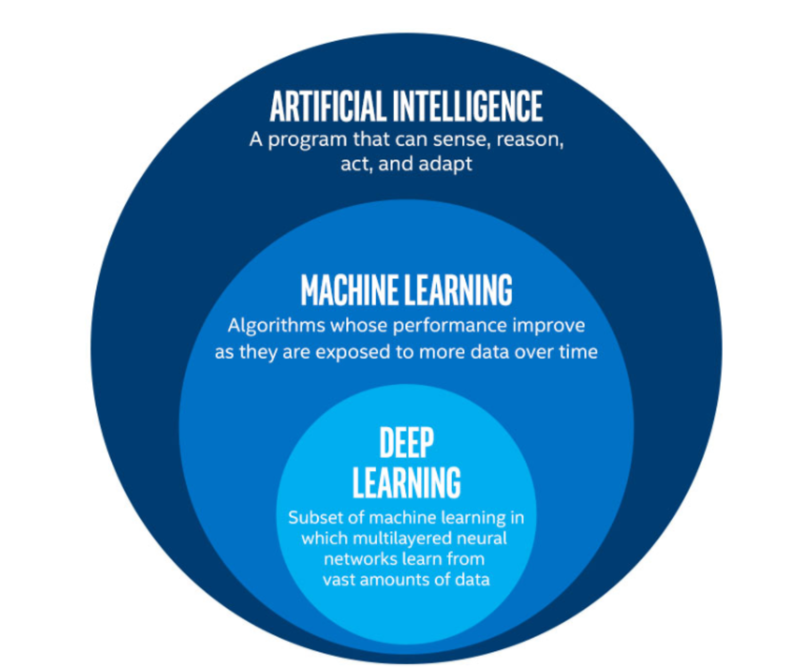
다시 그린 그림 · 누르면 원본기계학습 vs 딥러닝 — 특징 추출을 누가 하나
그림은 "자동차인가 아닌가"를 분류하는 두 흐름입니다. 파란 화살표 = 처리 순서.
위 줄 (기계학습): 입력(자동차 그림) → 특징 추출Feature Extraction(사람이 모니터를 보며 직접 특징을 고르는 모습) → 분류Classification(트리 모양 분류기) → 출력(CAR / NOT CAR).
아래 줄 (딥러닝): 입력 → 특징 추출 + 분류를 하나의 신경망이(원 21개가 7열로 이어진 그림) → 출력.
기계학습은 사람이 특징을 정해 모델에 넣습니다. 딥러닝은 원본 입력을 받아 특징까지 데이터에서 학습합니다. 이처럼 입력에서 출력까지 한 모델이 학습하는 방식을 end-to-end 학습이라고 부릅니다 (보충).
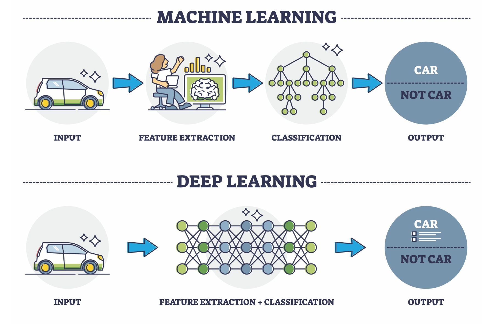
다시 그린 그림 · 누르면 원본사람이 고른 특징의 예 — 에지와 그래디언트 방향
The machine learning model learns from features selected or designed by humans.
기계학습 모델은 사람이 선택하거나 설계한 특징으로 학습합니다. 고양이 사진에서 사람이 정한 방법으로 뽑은 특징 두 가지입니다.

왼쪽 Edges(에지): 밝기가 급하게 바뀌는 곳(윤곽선)만 흰 선으로 남긴 그림입니다. 고양이 얼굴, 수염, 털의 경계가 보입니다.
오른쪽 Gradient orientations(그래디언트 방향): 그림을 작은 칸으로 나누고, 칸마다 밝기가 가장 많이 변하는 방향을 짧은 선분의 기울기로 표시했습니다. 이 방향들을 모아 특징으로 씁니다 (보충: HOG 특징이 이 방식).
딥러닝의 역사 Timeline of Deep Learning
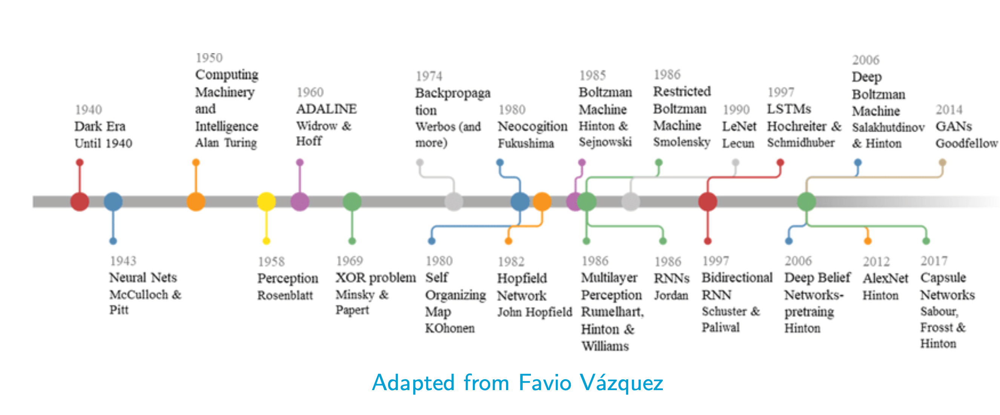
다시 그린 그림 · 누르면 원본그림 읽기: 회색 막대 = 시간축(왼쪽 1940 → 오른쪽 2017). 막대 위 색 점 하나가 사건 하나이고, 선을 따라 위나 아래의 글(연도, 사건 이름, 인물)과 이어집니다. 같은 해의 사건은 한 점에서 갈라집니다(예: 1986에 RBM, 다층 퍼셉트론, RNN).
출처: Favio Vázquez의 그림을 바탕으로 함(Adapted from). 철자 오기가 여러 개 있습니다(다음 장).
연표 중 이 단원과 이어지는 사건
| 연도 | 사건 (인물) | 이 단원과의 관계 |
|---|---|---|
| 1943 | 신경망 모델 (McCulloch & Pitts) | 뉴런을 "입력 합이 기준을 넘으면 1"인 논리 소자로 본 첫 모델 (보충) |
| 1958 | 퍼셉트론 (Rosenblatt) | 08–11. 가중치를 데이터로 학습하는 단층 모델 (보충) |
| 1969 | XOR 문제 (Minsky & Papert) | 12. 단층 퍼셉트론은 XOR을 못 푼다는 지적 |
| 1974 | 역전파 (Werbos 외) | 여러 층의 가중치를 학습하는 방법 (이후 차시) (보충) |
| 1986 | 다층 퍼셉트론 (Rumelhart, Hinton & Williams) | 13–14. 층을 쌓아 XOR 같은 문제를 해결, 역전파로 학습 (보충) |
| 2012 | AlexNet | 깊은 신경망이 이미지 인식 대회에서 큰 차이로 우승 (보충) |
- 1958 "Perception", 1986 "Multilayer Perception" → Perceptron의 오기로 보입니다. Perception은 "지각"이라는 다른 단어입니다.
- Boltzman → Boltzmann, Neocogition → Neocognitron, KOhonen → Kohonen, McCulloch & Pitt → Pitts, pretraing → pretraining
- 2012 AlexNet의 인물이 Hinton으로만 적혔는데, 논문 저자는 Krizhevsky, Sutskever, Hinton입니다 (보충).
대형 언어 모델 연표 Timeline of Large Language Models
그림 읽기: 가로축 = 시간(2023년 2월 → 2025년 8월, 세로 점선이 3개월 간격). 세로로 회사 10곳(xAI, Baidu, Google, DeepSeek, Microsoft, Mistral, Meta, Alibaba, OpenAI, Anthropic)이 한 줄씩 있고, 줄 위 점 하나가 모델 하나의 발표 시점입니다. 네모 상자는 같은 시기에 함께 나온 모델을 묶은 것입니다(예: Claude Opus 3 / Sonnet 3 / Haiku 3).
그림이 보여 주는 것: 2023년 이후 여러 회사가 몇 달 간격으로 새 모델을 계속 내놓고 있다는 흐름입니다. LLM도 이 단원의 인공신경망을 매우 크게 쌓은 모델입니다 (보충).
출처: Le & Abel (2025). 개별 점의 정확한 달은 그림 눈금으로만 짐작할 수 있습니다. 시험에서 모델 이름·날짜를 외울 대상은 아닌 것으로 보입니다 (추측). 그림 속 DeepSeek 줄은 V2가 LLM V1보다 앞에, V3가 R1보다 뒤에 놓여 실제 공개 순서와 다르게 보입니다(→ 27).
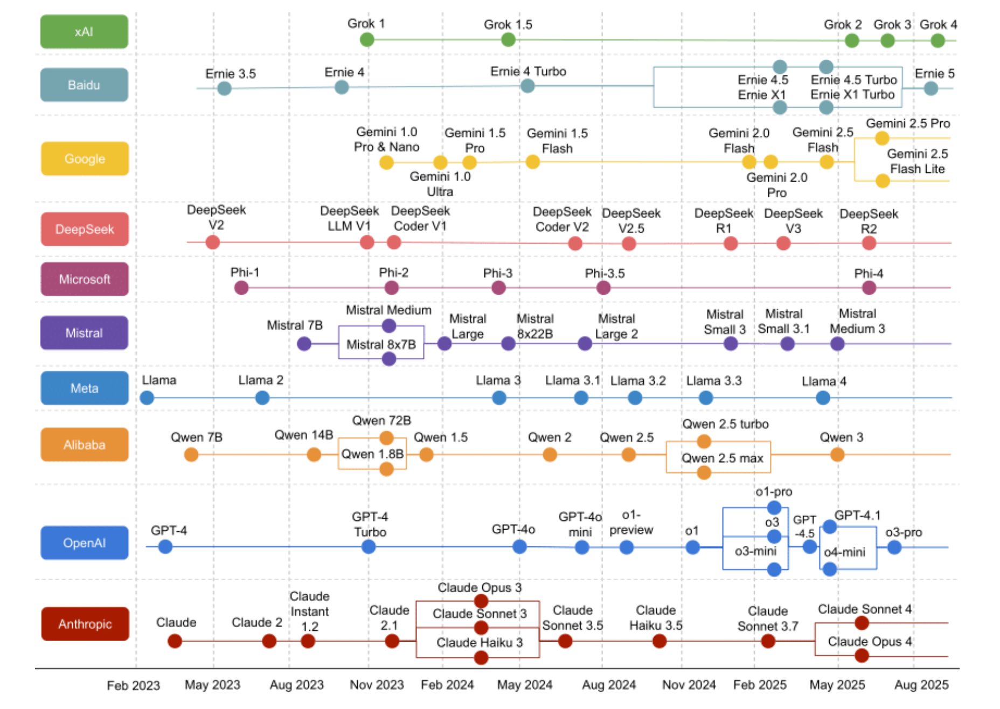
생물학적 뉴런 Biological Neurons
뉴런Neuron(약 1011개): 정보를 처리하는 특수한 생물 세포.
| 핵Nucleus | 유전 형질 정보를 담음. 그림의 세포체 가운데 주황색 타원 |
| 가지돌기Dendrite | 수신기. 다른 뉴런에서 오는 신호(자극)를 받음. 세포체에서 사방으로 뻗은 나뭇가지 모양 |
| 축삭Axon | 송신기. 세포체가 만든 신호를 내보냄. 세포체에서 길게 뻗은 줄기 |
| 수초Myelin sheath | 축삭을 마디마디 감싼 초록색 마디 (교안 본문에는 설명 없음) |
| 시냅스Synapse(약 1014개) | 두 뉴런 사이의 기본 연결 구조. 한 뉴런의 축삭 끝과 다음 뉴런의 가지돌기가 만나는 곳(그림의 파란 부분). 화학 물질(신경전달물질)로 신호를 전달 |
| 신경교세포Glial cells | 분홍·보라색 별 모양 세포 (교안 본문에는 설명 없음) |
한 뉴런은 다른 뉴런 약 104개와 연결됩니다. 세 수 모두 대략적인 자릿수입니다.
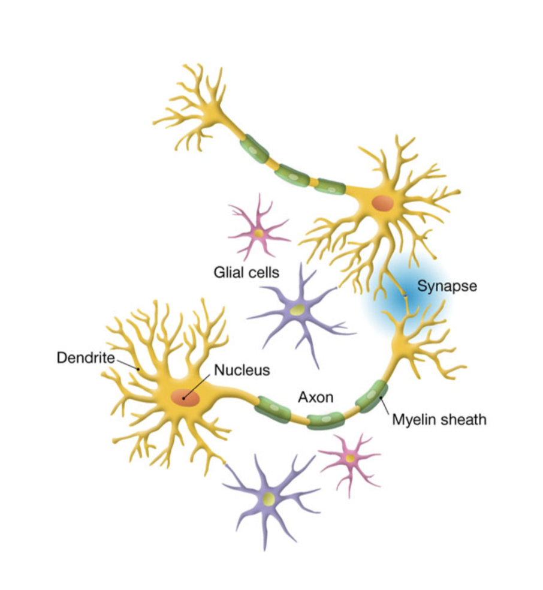
다시 그린 그림 · 누르면 원본뉴런의 각 부분과 퍼셉트론의 대응 (보충)
| 생물학적 뉴런 | 퍼셉트론 (08) | 설명 |
|---|---|---|
| 가지돌기로 받는 신호 | 입력 x₁, x₂ | 여러 신호를 받음 |
| 시냅스의 연결 세기 | 가중치 w₁, w₂ | 입력마다 출력에 주는 영향이 다름 |
| 세포체에서 신호를 모음 | 가중합 w₁x₁ + w₂x₂ | 받은 신호를 합침 |
| 일정 수준을 넘으면 발화 | 임계값 θ와 비교 | 넘으면 1, 아니면 0 |
| 축삭으로 내보내는 신호 | 출력 y | 하나의 출력 신호 |
교안 8쪽은 퍼셉트론이 "지능적 행동을 담당하는 인간의 뇌를 흉내 내려는 시도에서 시작했다"고 설명합니다. 위 표가 그 흉내의 내용입니다.
차이도 있습니다. 교안 10쪽: 퍼셉트론은 생물학적 뉴런과 달리 0과 1 두 값만 다룹니다(0 = 신호 없음, 1 = 신호 있음).
왜 (인공) 신경망인가? Why (Artificial) Neural Networks?
Many desirable characteristics of a brain, not present in modern computers
뇌에는 현대 컴퓨터에 없는 바람직한 특성이 많습니다. 신경망은 이 특성을 얻으려는 시도입니다. 교안이 든 9가지입니다. 교안에는 이름만 있고 오른쪽 설명은 교안에 없는 내용입니다 (보충).
| 대규모 병렬 처리Massive parallelism | 수많은 뉴런이 동시에 계산함 (컴퓨터의 CPU는 명령을 대체로 하나씩 차례로 처리 (보충)) |
| 분산 표현과 계산Distributed representation and computation | 하나의 개념이 한 곳이 아니라 여러 뉴런에 나뉘어 표현되고 계산됨 |
| 정보가 여러 시냅스에 분산Distributed information | 정보가 많은 시냅스 연결(가중치)에 나뉘어 저장됨 |
| 학습 능력 · 일반화 능력Learning ability · Generalization ability | 예시로부터 배우고, 처음 보는 입력에도 맞게 반응함 |
| 적응성Adaptivity | 환경이 바뀌면 그에 맞게 바뀜 |
| 본래적인 문맥 정보 처리Inherent contextual information processing | 주변 맥락을 함께 고려해 처리함 |
| 결함 허용Fault tolerance | 일부가 손상되어도 전체 기능이 크게 무너지지 않음 |
| 낮은 에너지 소비Low energy consumption | 같은 일을 적은 에너지로 함 |
퍼셉트론 Perceptron — Rosenblatt, 1957
Originated from attempts to mimic the human brain, which is responsible for intelligent behavior. Developed by Frank Rosenblatt in 1957.
퍼셉트론은 지능적 행동을 담당하는 인간의 뇌를 흉내 내려는 시도에서 시작했고, 1957년 프랭크 로젠블랫Frank Rosenblatt이 개발했습니다.
그림: 원 논문 첫 쪽입니다. 학술지 Psychological Review 65권 6호(1958), 제목 "THE PERCEPTRON: A PROBABILISTIC MODEL FOR INFORMATION STORAGE AND ORGANIZATION IN THE BRAIN"(퍼셉트론: 뇌의 정보 저장과 조직에 관한 확률 모델), 소속 Cornell Aeronautical Laboratory.
본문은 1957년, 논문은 1958년입니다. 1957년은 코넬 항공연구소 보고서로 처음 발표된 해, 1958년은 이 학술지 논문이 실린 해입니다 (보충). 4쪽 연표는 1958로 적었습니다.
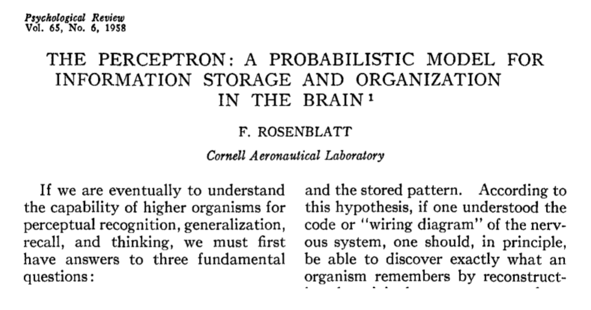
Rosenblatt 논문이 던진 세 가지 질문
If we are eventually to understand the capability of higher organisms for perceptual recognition, generalization, recall, and thinking, we must first have answers to three fundamental questions:
고등 생물이 지각적 인식, 일반화, 기억해 내기, 사고를 하는 능력을 언젠가 이해하려면, 먼저 세 가지 근본 질문에 답할 수 있어야 합니다.
- 물리 세계에 대한 정보를 생물 시스템이 어떻게 감지하는가? How is information about the physical world sensed, or detected?
- 정보는 어떤 형태로 저장(기억)되는가? In what form is information stored, or remembered?
- 저장된 정보가 인식과 행동에 어떻게 영향을 주는가? How does information contained in storage influence recognition and behavior?
퍼셉트론이 내놓은 답은 2번에 해당합니다. 정보는 입력과 출력을 잇는 연결의 세기, 즉 가중치에 저장됩니다(06의 "정보가 여러 시냅스에 분산"). 3번은 그 가중치로 입력을 계산해 출력을 내는 과정(08, 순전파)입니다.
교안 9쪽 번역 중 "recall"을 "기억"으로 옮겼는데, 정확히는 저장된 것을 다시 떠올리기입니다. 교안 인용문은 "question."으로 끝나지만 원문은 "questions:"입니다.
Part 1 정리 — 딥러닝과 뉴런
- AI ⊃ ML ⊃ DL. 딥러닝 = 여러 층의 신경망이 많은 데이터로 학습하는 기계학습.
- 기계학습은 사람이 특징(에지, 그래디언트 방향 등)을 정해 넣고, 딥러닝은 특징 추출과 분류를 신경망 하나가 함께 학습.
- 연표의 큰 줄기: 1958 퍼셉트론 → 1969 XOR 문제(단층의 한계) → 1986 다층 퍼셉트론·역전파 → 2012 AlexNet. 교안의 "Perception"은 Perceptron의 오기.
- 뉴런: 가지돌기 = 수신, 축삭 = 송신, 시냅스 = 연결(신경전달물질). 퍼셉트론에서 연결의 세기 = 가중치.
- 뇌의 특성(병렬, 분산 표현, 학습·일반화, 결함 허용, 저전력)을 얻으려는 것이 신경망의 동기.
- 퍼셉트론: Rosenblatt 1957(보고서), 1958(Psychological Review 논문).
퍼셉트론에서 신경망으로
퍼셉트론의 동작 — 가중합이 임계값을 넘으면 1
- 딥러닝의 기초입니다. Serves as the foundation of deep learning.
- 여러 입력 신호를 받아 하나의 출력 신호를 냅니다. Receives multiple input signals and produces a single output signal.
- 생물학적 뉴런과 달리 0과 1 두 값만 다룹니다(0 = 신호 없음, 1 = 신호 있음).
y = 0 (w₁x₁ + w₂x₂ ≤ θ)
1 (w₁x₁ + w₂x₂ > θ)
뉴런은 입력 신호의 총합이 임계값 θ(세타)를 넘을 때만 1을 냅니다. 같을 때(=)는 0입니다.
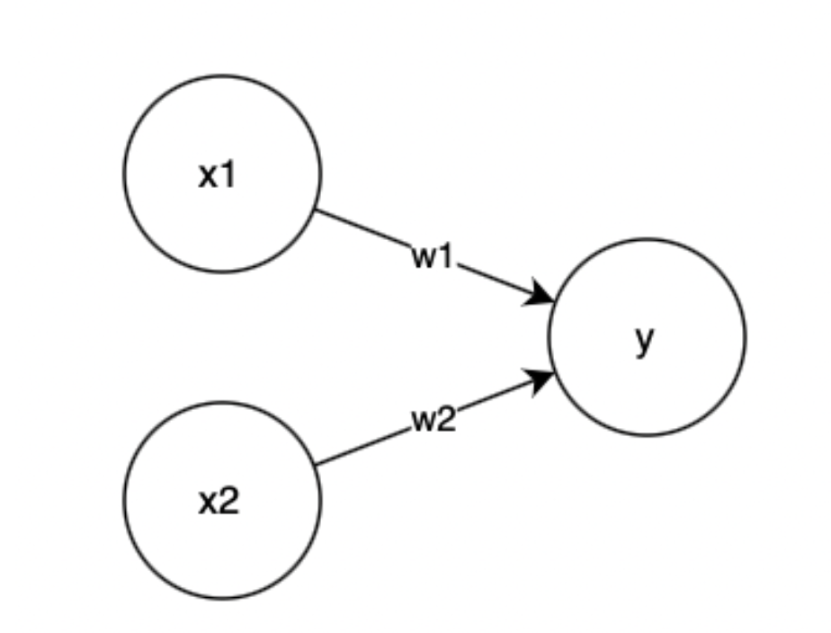
다시 그린 그림 · 누르면 원본| x₁, x₂ | 입력input (왼쪽 두 원) |
| y | 출력output (오른쪽 원) |
| w₁, w₂ | 가중치weight (화살표 위 글자) |
| θ | 임계값threshold (그림에 없음) |
규칙을 한 번 계산해 보기 (보충)
w₁ = 0.5, w₂ = 0.5, θ = 0.7이고 입력이 x₁ = 1, x₂ = 1이면
- 곱하기: w₁x₁ = 0.5 × 1 = 0.5, w₂x₂ = 0.5 × 1 = 0.5
- 더하기: 가중합 = 0.5 + 0.5 = 1.0
- 비교: 1.0 > 0.7 → y = 1
입력이 (1, 0)이면 가중합 0.5 ≤ 0.7 → y = 0입니다.
"곱해서 더한다"는 1학기의 내적 w·x입니다. "θ를 넘으면 1"은 가중합을 0 또는 1로 바꾸는 함수이고, 14–15에서 이것을 계단 함수step function라는 활성화 함수로 따로 떼어 씁니다.
같은 모양(입력 2개 → 출력 1개)이라도 w₁, w₂, θ 값만 바꾸면 다른 일을 합니다. 다음 09에서 이 세 값만 바꿔 AND, NAND, OR을 만듭니다.
논리 게이트를 퍼셉트론으로 — AND · NAND · OR
A perceptron can implement logic gates.
퍼셉트론으로 논리 게이트를 만들 수 있습니다. 표 아래 괄호가 그 게이트를 만드는 (w₁, w₂, θ)입니다.
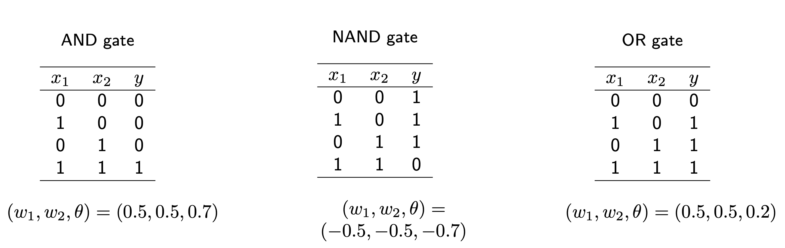
다시 그린 그림 · 누르면 원본| 게이트 | (w₁, w₂, θ) | 뜻 |
|---|---|---|
| AND | (0.5, 0.5, 0.7) | 입력 하나(0.5)로는 0.7을 못 넘고, 둘 다 1(1.0)이어야 넘음 |
| NAND | (−0.5, −0.5, −0.7) | AND의 세 값에 모두 −를 붙임 → 부등호 방향이 뒤집혀 출력이 반대 |
| OR | (0.5, 0.5, 0.2) | 입력 하나(0.5)만 1이어도 0.2를 넘음 |
→ 퍼셉트론의 구조는 같고, 매개변수(가중치와 임계값)만 다릅니다. The structure of perceptrons is identical, but their parameters (weights and thresholds) differ.
네 입력을 모두 손계산 (보충, Python 검산)
| (x₁, x₂) | 0.5x₁ + 0.5x₂ | AND: > 0.7? | OR: > 0.2? | −0.5x₁ − 0.5x₂ | NAND: > −0.7? |
|---|---|---|---|---|---|
| (0, 0) | 0 | 아니오 → 0 | 아니오 → 0 | 0 | 예 → 1 |
| (1, 0) | 0.5 | 아니오 → 0 | 예 → 1 | −0.5 | 예 → 1 |
| (0, 1) | 0.5 | 아니오 → 0 | 예 → 1 | −0.5 | 예 → 1 |
| (1, 1) | 1.0 | 예 → 1 | 예 → 1 | −1.0 | 아니오 → 0 |
세 열의 결과가 각각 AND (0, 0, 0, 1), OR (0, 1, 1, 1), NAND (1, 1, 1, 0) 진리표와 일치합니다.
NAND 계산 주의: 음수끼리 비교합니다. −0.5 > −0.7은 참(−0.5가 0에 더 가까움), −1.0 > −0.7은 거짓입니다.
조건을 만족하면 어떤 값이든 됩니다. 예: (w₁, w₂, θ) = (1, 1, 1.5)도 가중합 0, 1, 1, 2 중 2만 1.5를 넘으므로 AND입니다.
교안 값은 하나의 예입니다. 시험에서 "가중치를 찾아라"가 나오면 네 입력을 모두 넣어 확인하는 것이 검산 방법입니다.
게이트를 좌표 평면에서 보기
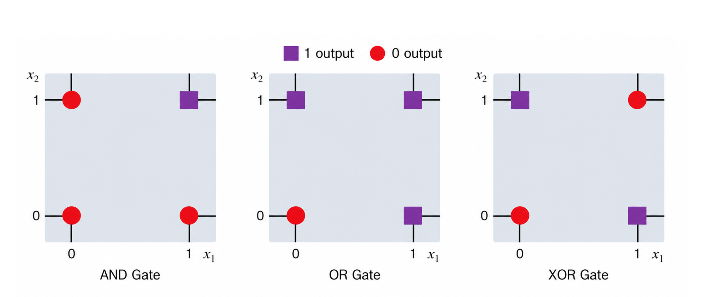
다시 그린 그림 · 누르면 원본그림 읽기: 세 그래프 모두 가로축 x₁, 세로축 x₂이고, 네 입력 (0,0), (1,0), (0,1), (1,1)을 점으로 찍었습니다. 범례: 보라 사각형 = 출력 1, 빨간 원 = 출력 0. AND는 (1,1)만 사각형, OR은 (0,0)만 원입니다.
AND와 OR은 직선 하나로 사각형과 원을 나눌 수 있습니다. XOR은 사각형이 (1,0)·(0,1)에, 원이 (0,0)·(1,1)에 대각선으로 엇갈려 있어 직선 하나로는 나눌 수 없습니다(→ 12). 교안은 이 그림에 선을 그리지 않았습니다. 다음 장에서 직선을 직접 구합니다.
퍼셉트론의 경계는 직선입니다 (보충)
출력이 0과 1로 바뀌는 경계는 가중합 = θ인 곳, 즉 w₁x₁ + w₂x₂ = θ라는 직선입니다.
| 게이트 | 경계 직선 | 1이 되는 쪽 |
|---|---|---|
| AND | 0.5x₁ + 0.5x₂ = 0.7 → x₁ + x₂ = 1.4 | 위쪽 (점 (1,1)만) |
| OR | 0.5x₁ + 0.5x₂ = 0.2 → x₁ + x₂ = 0.4 | 위쪽 ((0,0) 빼고 셋) |
| NAND | AND와 같은 직선 | 아래쪽 ((1,1) 빼고 셋) |
6-2 SVM의 결정 경계decision boundary와 같은 개념입니다. 입력이 2개면 직선, 3개면 평면, 더 많으면 초평면hyperplane입니다.
가중치와 편향 Weights and Bias — θ를 −b로
If we replace θ with −b, the equation can be rewritten as follows:
θ를 −b로 바꾸면(θ = −b), θ를 왼쪽으로 옮겨 식을 다음처럼 쓸 수 있습니다.
w₁x₁ + w₂x₂ > θ ⇔ w₁x₁ + w₂x₂ − θ > 0 ⇔ b + w₁x₁ + w₂x₂ > 0
y = 0 (b + w₁x₁ + w₂x₂ ≤ 0)
1 (b + w₁x₁ + w₂x₂ > 0)
이제 비교 기준이 항상 0이고, 기준값은 편향 b로 식 안에 들어갑니다.
w1, w2 are parameters that control the influence (importance) of each input on the output, while the bias (b) is a parameter that determines how easily the neuron is activated.
- 가중치 w₁, w₂: 각 입력이 출력에 주는 영향(중요도)을 조절
- 편향 b: 뉴런이 얼마나 쉽게 활성화되는지(1을 내는지)를 정함
| 게이트 | θ (11쪽) | b = −θ |
|---|---|---|
| AND | 0.7 | −0.7 |
| NAND | −0.7 | 0.7 |
| OR | 0.2 | −0.2 |
네 입력 모두 θ 식과 b 식의 출력이 같습니다(Python 검산).
b가 "얼마나 쉽게 활성화되나"를 정한다는 뜻 (보충)
가중치를 w₁ = w₂ = 0.5로 고정하고 b만 바꿉니다. 가중합 b + 0.5x₁ + 0.5x₂:
| b | (0,0) | (1,0) | (0,1) | (1,1) | 1이 되는 조건 |
|---|---|---|---|---|---|
| −0.7 | −0.7 → 0 | −0.2 → 0 | −0.2 → 0 | 0.3 → 1 | 둘 다 1 (AND) |
| −0.2 | −0.2 → 0 | 0.3 → 1 | 0.3 → 1 | 0.8 → 1 | 하나라도 1 (OR) |
| 0.1 | 0.1 → 1 | 0.6 → 1 | 0.6 → 1 | 1.1 → 1 | 항상 1 |
b가 클수록(덜 음수일수록) 적은 입력으로도 0을 넘어 1이 되기 쉽고, b가 작을수록 1이 되기 어렵습니다.
6-1의 β₀ + β₁x에서 β₀(절편)가 b, β₁이 w입니다. 퍼셉트론의 b + w₁x₁ + w₂x₂는 입력이 2개인 같은 일차식입니다.
차이는 그 일차식을 무엇에 통과시키느냐입니다. 로지스틱 회귀는 시그모이드(0~1 사이 확률), 퍼셉트론은 0 또는 1(계단 함수). 이 차이가 15–16의 활성화 함수 이야기입니다.
퍼셉트론의 한계 Limitation of Perceptron — XOR
The perceptron we have seen so far cannot implement the XOR gate.
지금까지 본 퍼셉트론으로는 XOR 게이트를 만들 수 없습니다.
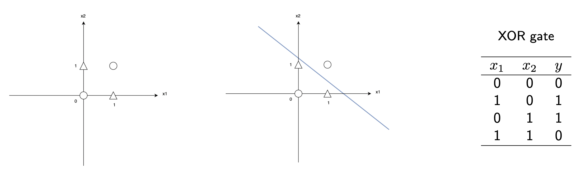
다시 그린 그림 · 누르면 원본그림 읽기: ○ = 출력 0, △ = 출력 1. 왼쪽: (0,0)과 (1,1)에 ○, (1,0)과 (0,1)에 △. 가운데: 같은 점 위에 오른쪽 아래로 내려가는 파란 직선 하나를 그었습니다. 선 위쪽에는 (1,1)의 ○만, 아래쪽에는 ○ 하나와 △ 둘이 섞여 나누는 데 실패합니다. 오른쪽: XOR 진리표.
→ If the constraint of linearity is removed, the data can be separated.
→ "직선이어야 한다"는 제약을 없애면 나눌 수 있습니다. 경계가 곡선이면 △ 둘만 따로 감쌀 수 있습니다 (보충). 교안 그림에 곡선은 그려져 있지 않습니다.
왜 어떤 직선도 안 되는가 — 부등식 네 개 (보충)
XOR을 만드는 b, w₁, w₂가 있다고 가정하고 네 입력을 넣습니다(규칙: > 0이면 1).
| 입력 | XOR 출력 | 필요한 조건 |
|---|---|---|
| (0, 0) | 0 | ① b ≤ 0 |
| (1, 0) | 1 | ② b + w₁ > 0 |
| (0, 1) | 1 | ③ b + w₂ > 0 |
| (1, 1) | 0 | ④ b + w₁ + w₂ ≤ 0 |
② + ③: 2b + w₁ + w₂ > 0
① + ④: 2b + w₁ + w₂ ≤ 0
같은 값이 0보다 크면서 0 이하일 수 없으므로 모순입니다. 따라서 이런 b, w₁, w₂는 없습니다.
Python으로 w₁, w₂, b를 −2부터 2까지 0.05 간격으로 모두 넣어 봐도 XOR을 맞히는 조합은 0개였습니다.
6-2 SVM에서도 같은 XOR 그림을 보았습니다. 그때는 특징 공간을 넓혀(새 특징 추가, 커널) 직선으로 나눌 수 있게 했습니다.
퍼셉트론에서는 층을 쌓습니다. 첫 층의 출력이 새 특징이 되어, 그 공간에서는 직선 하나로 나눌 수 있습니다(→ 13). 1969년 Minsky & Papert가 지적한 "XOR 문제"(03)가 이것입니다.
다층 퍼셉트론 Multi-layer Perceptron — 게이트를 조합해 XOR
The XOR gate can be constructed by combining AND, NAND, and OR gates.
XOR은 AND, NAND, OR 게이트를 조합해서 만들 수 있습니다. s₁ = NAND(x₁, x₂), s₂ = OR(x₁, x₂), y = AND(s₁, s₂).
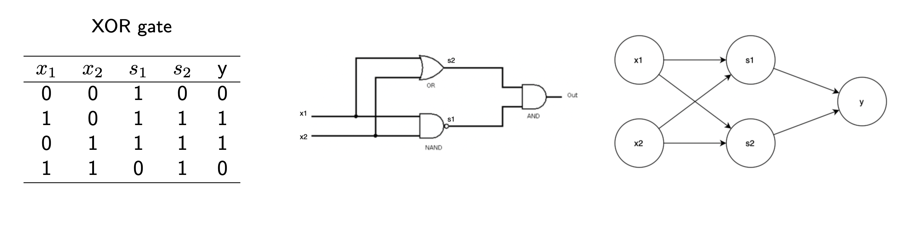
다시 그린 그림 · 누르면 원본왼쪽 표: 중간값 s₁, s₂와 최종 y. s₁ 열 = NAND 진리표 (1,1,1,0), s₂ 열 = OR 진리표 (0,1,1,1).
가운데 회로: x₁, x₂가 갈라져 위 OR(→ s₂)과 아래 NAND(출력 끝 작은 원 = 부정, → s₁)에 모두 들어가고, s₂와 s₁이 오른쪽 AND로 들어가 Out이 됩니다.
오른쪽 노드 그림: 같은 회로를 퍼셉트론으로. 왼쪽 x₁, x₂ → 가운데 s₁, s₂ (모든 쌍이 연결) → 오른쪽 y. 층이 하나 더 생겼습니다.
XOR을 2층으로 끝까지 계산 (보충, Python 검산)
1층: s₁ = NAND (b = 0.7, w = −0.5, −0.5), s₂ = OR (b = −0.2, w = 0.5, 0.5). 2층: y = AND(s₁, s₂) (b = −0.7, w = 0.5, 0.5). 규칙은 모두 "> 0이면 1".
| (x₁, x₂) | 0.7 − 0.5x₁ − 0.5x₂ | s₁ | −0.2 + 0.5x₁ + 0.5x₂ | s₂ | −0.7 + 0.5s₁ + 0.5s₂ | y | XOR |
|---|---|---|---|---|---|---|---|
| (0, 0) | 0.7 | 1 | −0.2 | 0 | −0.7 + 0.5 + 0 = −0.2 | 0 | 0 |
| (1, 0) | 0.2 | 1 | 0.3 | 1 | −0.7 + 0.5 + 0.5 = 0.3 | 1 | 1 |
| (0, 1) | 0.2 | 1 | 0.3 | 1 | −0.7 + 0.5 + 0.5 = 0.3 | 1 | 1 |
| (1, 1) | −0.3 | 0 | 0.8 | 1 | −0.7 + 0 + 0.5 = −0.2 | 0 | 0 |
마지막 두 열이 네 행 모두 같습니다. 교안 15쪽 표의 s₁, s₂, y와도 일치합니다.
층을 쌓으면 왜 풀리나 — (s₁, s₂) 공간에서 보기 (보충)
1층은 입력 (x₁, x₂)를 새 좌표 (s₁, s₂)로 옮깁니다.
| (x₁, x₂) | → (s₁, s₂) | XOR |
|---|---|---|
| (0, 0) | (1, 0) | 0 |
| (1, 0) | (1, 1) | 1 |
| (0, 1) | (1, 1) | 1 |
| (1, 1) | (0, 1) | 0 |
새 좌표에서 출력 1인 점은 (1, 1) 한 곳에 모이고, 출력 0인 점은 (1, 0)과 (0, 1)입니다. 이것은 AND의 배치와 같아서 직선 s₁ + s₂ = 1.4 하나로 나뉩니다. 2층의 AND가 그 직선입니다.
노드 열은 입력(x) · 중간(s) · 출력(y) 3열이지만, 가중치가 있는 층은 2개(x→s, s→y)입니다. 교안이 따르는 사이토 고키 책은 가중치를 가진 층 수로 세어 이것을 2층 퍼셉트론이라고 부릅니다.
19쪽의 "3-layer Perceptron"도 같은 방식입니다. 노드 열은 입력·은닉1·은닉2·출력 4열이고, 가중치 층 W⁽¹⁾, W⁽²⁾, W⁽³⁾가 3개입니다(→ 17).
가운데 층 s처럼 입력도 출력도 아닌 층을 은닉층hidden layer이라고 부릅니다(→ 14).
퍼셉트론에서 인공신경망으로 Perceptron to Artificial Neural Networks
그림 읽기: 빨간 원 3개 = 입력층Input, 파란 원 4개 = 은닉층Hidden, 초록 원 2개 = 출력층Output. 화살표 = 신호가 가는 방향이고 화살표마다 가중치가 하나씩 있습니다. 이웃한 층의 모든 노드 쌍이 연결되어 있습니다(3 × 4 + 4 × 2 = 20개).
How are signals transmitted in a neural network?
신경망에서 신호는 어떻게 전달될까요? 노드 하나는 퍼셉트론 하나와 같은 계산을 합니다.
y = h(b + w₁x₁ + w₂x₂ + ⋯)
입력 신호의 총합을 함수 h(x)로 변환하고, 변환된 값이 출력 y입니다. The total sum of input signals is transformed through a function h(x), and the transformed value represents the output y.
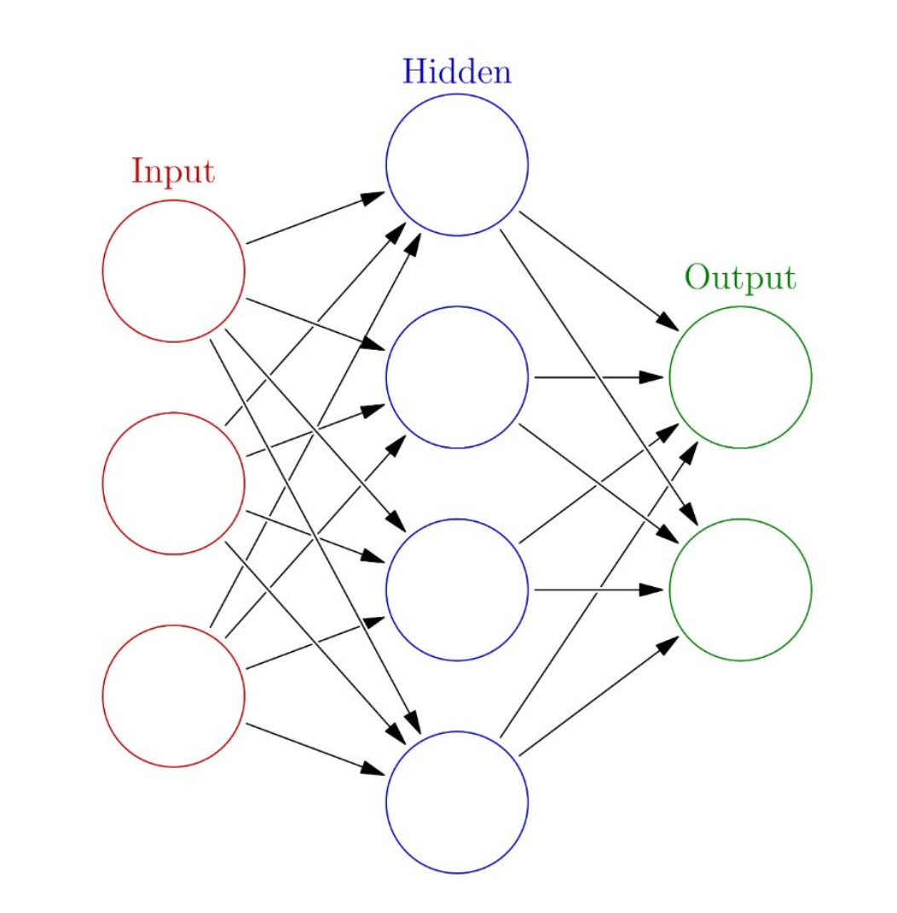
다시 그린 그림 · 누르면 원본h(x) = 0 (x ≤ 0)
1 (x > 0)
h(−1) = 0, h(0) = 0, h(1) = 1. 0에서 값이 계단처럼 뛰어서 계단 함수라고 부릅니다. 11의 "b + ⋯ > 0이면 1"을 함수 하나로 쓴 것입니다.
활성화 함수 Activation Function
The activation function determines whether the total sum of input signals triggers activation.
활성화 함수는 입력 신호의 총합이 활성화를 일으킬지(출력을 낼지)를 정합니다. 14의 식을 두 단계로 나눠 씁니다.
a = b + w₁x₁ + w₂x₂ → y = h(a)
- a = 가중치를 곱한 입력과 편향의 합 (가중합). 아직 활성화 전 값
- y = a를 활성화 함수 h에 넣은 결과 = 이 뉴런의 출력
그림 읽기: 회색 원 "1"은 항상 1인 입력이고, 그 화살표의 가중치가 b입니다(1 × b = b). 그래서 편향도 가중치 하나처럼 그릴 수 있습니다. 큰 원 하나가 뉴런 하나이고, 그 안에서 a → h() → y로 바뀝니다.
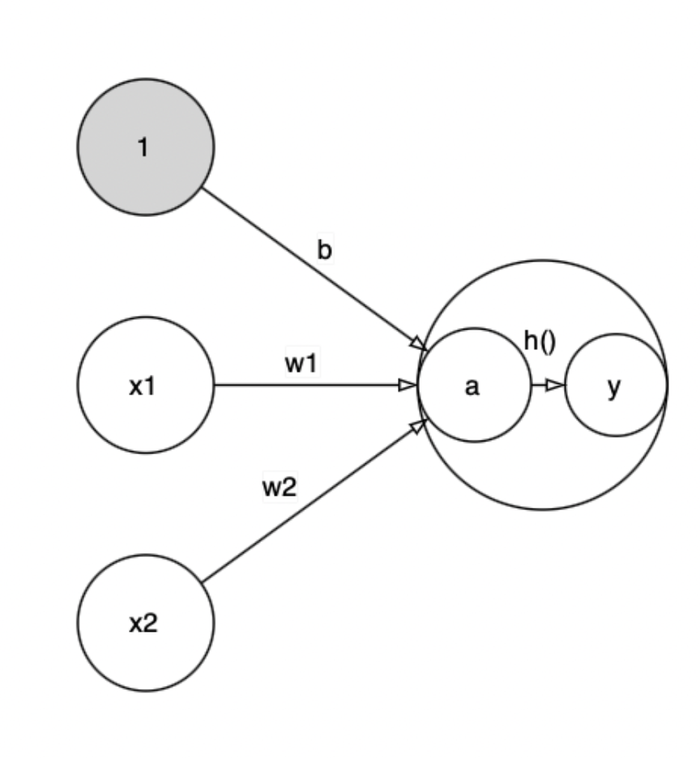
다시 그린 그림 · 누르면 원본활성화 함수는 비선형이어야 합니다 (보충)
h가 선형 함수 h(a) = ca라면, 층을 두 번 쌓아도
y = c(c(xW⁽¹⁾)W⁽²⁾) = x · (c2W⁽¹⁾W⁽²⁾)
결과가 행렬 하나 W = c2W⁽¹⁾W⁽²⁾를 곱한 것과 같습니다(편향을 넣어도 마찬가지로 일차식 하나가 됨). 층을 아무리 쌓아도 층 하나와 같은 직선 경계밖에 못 만들어 XOR을 풀 수 없습니다.
13에서 XOR이 풀린 것은 계단 함수가 가중합을 0과 1로 꺾어서 새 좌표 (s₁, s₂)를 만들었기 때문입니다.
| 퍼셉트론 | 인공신경망 | |
|---|---|---|
| 활성화 함수 | 계단 함수 | 매끄러운 함수 (시그모이드, ReLU 등) |
| 출력 | 0 또는 1 | 연속된 실수 |
| 층 | 단층(다층도 가능) | 은닉층을 여러 개 |
신경망은 가중치를 조금씩 바꿔 가며 학습하는데, 계단 함수는 출력이 0과 1로만 뛰어서 조금 바꾼 효과를 알기 어렵습니다. 그래서 매끄러운 함수를 씁니다(학습 방법은 이후 차시).
활성화 함수의 종류 — Sigmoid · Tanh · ReLU
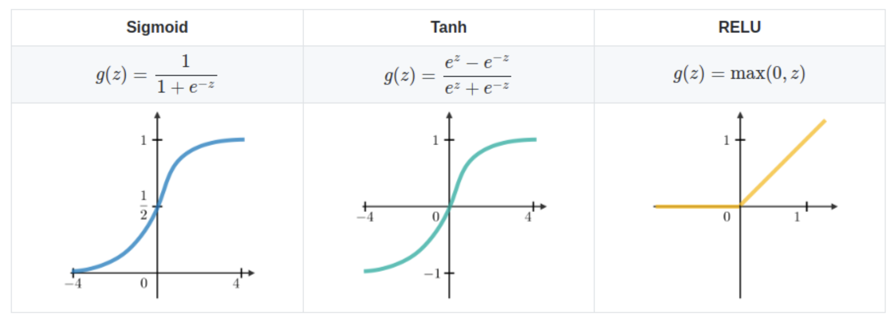
다시 그린 그림 · 누르면 원본| 함수 | 식 (교안은 g(z)로 씀) | 출력 범위 | 그래프 읽기 |
|---|---|---|---|
| 시그모이드Sigmoid | g(z) = 11 + e−z | 0과 1 사이 | 파란 S자. z = 0에서 12, 왼쪽 끝은 0, 오른쪽 끝은 1에 가까워짐. 6-1 로지스틱 회귀의 그 함수 |
| tanhHyperbolic tangent | g(z) = ez − e−zez + e−z | −1과 1 사이 | 청록 S자. 원점 (0, 0)을 지나고 −1과 1에 가까워짐 |
| ReLURectified Linear Unit | g(z) = max(0, z) | 0 이상 | 노란 꺾은선. z < 0이면 0(수평), z ≥ 0이면 z 그대로(기울기 1) |
값으로 비교하기 (보충, Python 검산)
| z | 계단 h(z) | 시그모이드 | tanh | ReLU |
|---|---|---|---|---|
| −4 | 0 | 0.018 | −0.999 | 0 |
| −1 | 0 | 0.269 | −0.762 | 0 |
| 0 | 0 | 0.5 | 0 | 0 |
| 1 | 1 | 0.731 | 0.762 | 1 |
| 4 | 1 | 0.982 | 0.999 | 4 |
시그모이드 계산 예: z = 1이면 e−1 ≈ 0.368, 11 + 0.368 ≈ 0.731.
- 시그모이드는 계단 함수와 같은 방향(입력이 크면 1 쪽, 작으면 0 쪽)이지만 0과 1 사이를 매끄럽게 잇습니다.
- tanh는 모양이 시그모이드와 같고 범위가 −1~1이며 0을 중심으로 대칭입니다.
- ReLU는 음수를 0으로 자르고 양수는 그대로 둡니다. 계산이 가장 간단합니다.
이 쪽은 활성화 함수를 g(z)로, 16–17쪽은 h(x), h(a)로 씁니다. 같은 역할의 함수이고 글자만 다릅니다. 21쪽부터는 은닉층에 시그모이드 h를 쓰고(→ 19), 출력층 함수는 σ로 따로 씁니다(→ 21).
Part 2 정리 — 퍼셉트론에서 신경망으로
- 퍼셉트론: y = 1 (w₁x₁ + w₂x₂ > θ), 0 (≤ θ). 입력 여러 개 → 출력 하나, 0과 1만 다룸.
- AND (0.5, 0.5, 0.7), NAND (−0.5, −0.5, −0.7), OR (0.5, 0.5, 0.2): 구조는 같고 매개변수만 다름. 네 입력을 넣어 검산.
- θ = −b로 바꾸면 b + w₁x₁ + w₂x₂ > 0. w = 입력의 영향(중요도), b = 얼마나 쉽게 활성화되는지.
- 퍼셉트론의 경계는 직선 w₁x₁ + w₂x₂ = θ. XOR은 ① b ≤ 0, ②③ b + w > 0, ④ b + w₁ + w₂ ≤ 0이 모순이라 직선 하나로 불가능.
- XOR = AND(NAND, OR): 층을 쌓으면 (s₁, s₂) 새 좌표에서 직선으로 나뉨 → 다층 퍼셉트론.
- 신경망: a = b + w₁x₁ + w₂x₂, y = h(a). 활성화 함수는 비선형이어야 층을 쌓는 의미가 있음.
- 계단(0 또는 1), 시그모이드(0~1, z = 0에서 0.5), tanh(−1~1), ReLU(max(0, z)).
3층 신경망의 계산 — 순전파
3층 퍼셉트론 3-layer Perceptron — 노드 2 → 3 → 2 → 2
The input layer consists of 2 nodes, the first hidden layer has 3 nodes, the second hidden layer has 2 nodes, and the output layer consists of 2 nodes.
입력층 노드 2개, 첫 번째 은닉층hidden layer 3개, 두 번째 은닉층 2개, 출력층 2개입니다. 그림의 왼쪽 열부터 차례로 x1, x2 → 빈 원 3개 → 빈 원 2개 → y1, y2입니다.
이웃한 두 층은 모든 노드 쌍이 화살표로 연결됩니다(완전 연결). 화살표 하나에 가중치 하나가 붙습니다.
| 연결 | 화살표(가중치) 수 | 편향 수 |
|---|---|---|
| 입력 → 은닉 1 | 2 × 3 = 6 | 3 |
| 은닉 1 → 은닉 2 | 3 × 2 = 6 | 2 |
| 은닉 2 → 출력 | 2 × 2 = 4 | 2 |
| 합 | 16 | 7 |
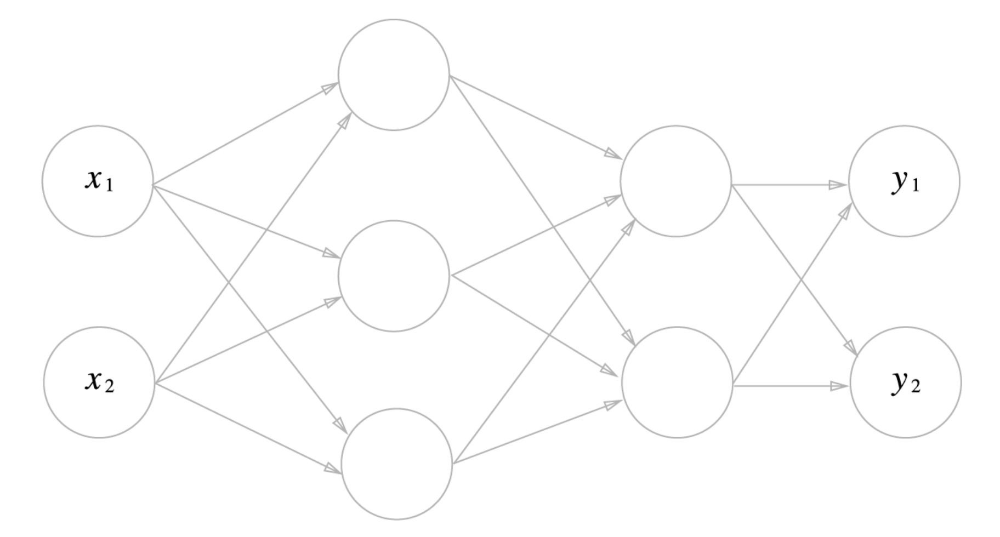
다시 그린 그림 · 누르면 원본왜 노드 열이 4개인데 "3층"일까
이 교안(과 그림 출처인 『밑바닥부터 시작하는 딥러닝』)은 가중치를 가진 층의 수로 층을 셉니다. 가중치 묶음은 W(1), W(2), W(3) 세 개이므로 3층입니다.
| 노드 열 | 이름 | 들어오는 가중치 |
|---|---|---|
| 0번째 | 입력층 (x) | 없음 — 값을 그대로 넘김 |
| 1번째 | 은닉층 1 (a(1), z(1)) | W(1), b(1) |
| 2번째 | 은닉층 2 (a(2), z(2)) | W(2), b(2) |
| 3번째 | 출력층 (a(3), y) | W(3), b(3) |
15쪽 XOR 신경망(x → s → y)은 노드 열이 3개이고 가중치 묶음이 2개이므로 2층 퍼셉트론입니다(→ 13).
노드 열 수로 세는 책도 있어서, 같은 그림을 "4층"이라고 부르기도 합니다. 시험에서 층 수를 물으면 무엇으로 세는지를 함께 쓰면 안전합니다. (보충)
신호가 입력층에서 출력층 쪽으로 한 방향으로만 계산되어 가는 것을 순전파forward propagation라고 합니다 (보충). Part 3 전체가 이 순전파 계산입니다.
기호 읽는 법 — 위 첨자는 층, 아래 첨자는 "도착 · 출발"
w(1)12
| (1) 위 첨자 | 몇 번째 가중치 층인가 = 1층 (입력층 → 은닉층 1) |
| 앞 아래 첨자 1 | 도착하는 노드 = 다음 층의 1번 노드 a(1)1 |
| 뒤 아래 첨자 2 | 출발하는 노드 = 앞 층의 2번 노드 x2 |
그래서 w(1)12는 "x2에서 a(1)1로 가는 화살표의 가중치"입니다. 20쪽 그림에서 x2 → a(1)1 굵은 화살표에 붙은 이름과 같습니다.
| 기호 | 뜻 |
|---|---|
| a(l)j | l층 j번 노드의 가중합 (활성화 전) |
| z(l)j | a(l)j를 활성화 함수 h에 넣은 값 (활성화 후) |
| b(l)j | l층 j번 노드의 편향. 회색 노드 "1"에서 오는 화살표 |
| yk | 출력층 k번 노드의 최종 출력 |
회색 노드 "1"은 항상 1을 내보내는 노드입니다. 1 × b = b이므로 편향을 "입력 1에 붙은 가중치"처럼 그림에 그린 것입니다.
입력층 → 은닉층 1 — 노드 하나씩 쓰면
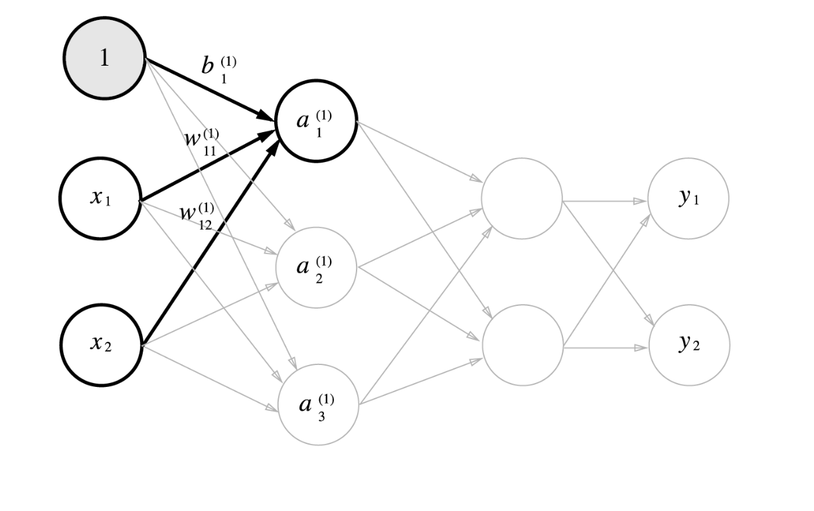
다시 그린 그림 · 누르면 원본그림에서 굵게 그린 것은 a(1)1로 들어가는 화살표 세 개입니다: 1 → b(1)1, x1 → w(1)11, x2 → w(1)12. 각 화살표는 "출발 값 × 가중치"를 보내고, 노드는 이것을 모두 더합니다.
a(1)1 = w(1)11x1 + w(1)12x2 + b(1)1
a(1)2 = w(1)21x1 + w(1)22x2 + b(1)2
a(1)3 = w(1)31x1 + w(1)32x2 + b(1)3
세 식은 모양이 같고 도착 노드 번호(앞 아래 첨자)만 1, 2, 3으로 바뀝니다. 13쪽의 b + w1x1 + w2x2를 노드마다 한 번씩 쓴 것입니다.
세 식을 행렬 하나로 — a(1) = xW(1) + b(1)
| w(1)11 | w(1)21 | w(1)31 |
| w(1)12 | w(1)22 | w(1)32 |
- 교안은 x를 행벡터(가로 한 줄, 1×2)로 둡니다. 그래서 곱하는 순서가 x 먼저, W 나중입니다.
- 모양: (1×2)(2×3) = (1×3). 가운데 2가 같아야 곱할 수 있고, 결과는 바깥 두 수 1×3입니다.
- W(1)의 j번째 열 = 노드 a(1)j로 들어오는 가중치들. i번째 행 = 입력 xi에서 나가는 가중치들.
보통 행렬 칸 이름은 (행, 열)입니다. 그런데 w(1)ji는 (도착 j, 출발 i)이고, 이 값은 행렬의 i행 j열에 들어갑니다. 예: w(1)12는 2행 1열, w(1)31은 1행 3열.
즉 교안의 W(1)은 "wji를 j행 i열에 놓은 3×2 행렬"을 전치(transpose)한 모양입니다. x를 세로 열벡터로 두는 책은 a = Wx + b로 쓰고 W를 3×2로 둡니다. 계산 결과는 같습니다. (보충)
숫자를 넣어 한 칸씩 확인 (보충) 예시 값
교안 그림의 출처인 사이토 고키 『밑바닥부터 시작하는 딥러닝』 3장의 값입니다. 교안에는 숫자가 없습니다.
W(1) =
| 0.1 | 0.3 | 0.5 |
| 0.2 | 0.4 | 0.6 |
b(1) = (0.1, 0.2, 0.3)
1행(0.1, 0.3, 0.5)은 x1에서, 2행(0.2, 0.4, 0.6)은 x2에서 나가는 가중치입니다. 그래서 w(1)11 = 0.1, w(1)12 = 0.2, w(1)21 = 0.3 …
| 노드 | W(1)의 열 | x1w + x2w + b | a(1) |
|---|---|---|---|
| a(1)1 | (0.1, 0.2) | 1.0×0.1 + 0.5×0.2 + 0.1 | 0.3 |
| a(1)2 | (0.3, 0.4) | 1.0×0.3 + 0.5×0.4 + 0.2 | 0.7 |
| a(1)3 | (0.5, 0.6) | 1.0×0.5 + 0.5×0.6 + 0.3 | 1.1 |
a(1) = (0.3, 0.7, 1.1). 행벡터 x를 W(1)의 각 열과 짝지어 곱해 더한 뒤 편향을 더하면 됩니다. Python(numpy)의 X @ W1 + B1과 같은 값입니다.
은닉층 1의 활성화 — z(1) = h(a(1))
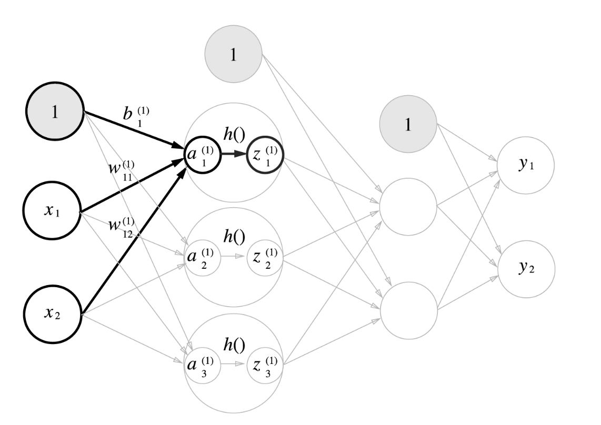
다시 그린 그림 · 누르면 원본17쪽 그림(뉴런 안에서 a → h() → y)을 은닉층 1의 노드 세 개에 모두 적용한 그림입니다. 각 큰 원 안에서 가중합 a(1)j가 활성화 함수 h()를 지나 z(1)j가 됩니다. 다음 층으로 나가는 화살표는 a가 아니라 z에서 출발합니다.
z(1) = h(a(1)), h : ℝn → ℝn
h(x) = (h(x1), h(x2), …, h(xn))
h(xj) = 11 + e−xj
h는 벡터를 받아 같은 길이의 벡터를 냅니다. 원소마다 따로 시그모이드를 적용한다는 뜻입니다(원소별 적용). 원소끼리 섞이지 않습니다.
숫자로 z(1) 구하기 (보충) 예시 값
| j | a(1)j | e−a | 1 + e−a | z(1)j = 11 + e−a |
|---|---|---|---|---|
| 1 | 0.3 | 0.7408 | 1.7408 | 0.5744 |
| 2 | 0.7 | 0.4966 | 1.4966 | 0.6682 |
| 3 | 1.1 | 0.3329 | 1.3329 | 0.7503 |
z(1) = (0.5744, 0.6682, 0.7503). 소수 넷째 자리까지 반올림한 Python 값입니다.
시험장에서는 e−0.3 같은 값을 손으로 구하기 어렵습니다. 시그모이드 값이 주어지는 형태를 예상합니다(추측).
- h(0) = 0.5. a > 0이면 0.5보다 크고, a < 0이면 0.5보다 작습니다.
- 출력은 항상 0과 1 사이. a가 클수록 1에 가까워집니다 — 위 표에서 0.3 < 0.7 < 1.1이므로 z도 같은 순서입니다.
왜 h를 거쳐야 하나 (보충): h가 없으면(또는 h가 일차함수면) xW(1)W(2) = x(W(1)W(2))처럼 층을 여러 개 쌓아도 행렬 하나와 같아집니다. 직선 경계 하나로 못 푸는 XOR(→ 12) 같은 문제를 풀려면 비선형 함수가 필요합니다.
은닉층 1 → 은닉층 2 — 같은 계산을 한 번 더
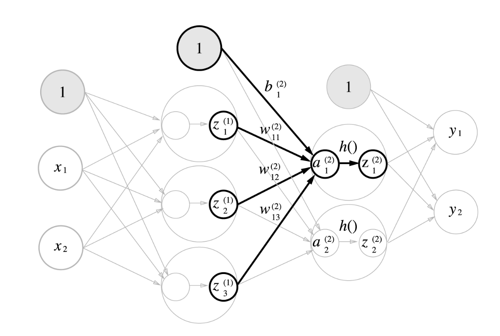
다시 그린 그림 · 누르면 원본이번에는 입력 자리에 z(1)가 옵니다. 굵은 화살표: 1 → b(2)1, z(1)1 → w(2)11, z(1)2 → w(2)12, z(1)3 → w(2)13.
a(2)1 = w(2)11z(1)1 + w(2)12z(1)2 + w(2)13z(1)3 + b(2)1 (보충)
W(2) =
| w(2)11 | w(2)21 |
| w(2)12 | w(2)22 |
| w(2)13 | w(2)23 |
모양: z(1)(1×3) · W(2)(3×2) = (1×2) → 노드 2개. 그다음 z(2) = h(a(2))로 다시 시그모이드를 적용합니다(그림의 h()).
숫자로 a(2), z(2) 구하기 (보충) 예시 값
| 0.1 | 0.4 |
| 0.2 | 0.5 |
| 0.3 | 0.6 |
b(2) = (0.1, 0.2)
앞 장의 z(1) = (0.5744, 0.6682, 0.7503)을 입력으로 씁니다. a(2)1은 W(2)의 1열 (0.1, 0.2, 0.3), a(2)2는 2열 (0.4, 0.5, 0.6)과 짝짓습니다.
| z1w + z2w + z3w | + b | a(2) | z(2) = h(a) | |
|---|---|---|---|---|
| 1 | 0.0574 + 0.1336 + 0.2251 = 0.4162 | + 0.1 | 0.5162 | 0.6262 |
| 2 | 0.2298 + 0.3341 + 0.4502 = 1.0140 | + 0.2 | 1.2140 | 0.7710 |
a(2) = (0.5162, 1.2140), z(2) = (0.6262, 0.7710)
곱한 항(예: 0.5744 × 0.1 = 0.0574)을 반올림해서 적었습니다. 합과 a, z는 반올림하지 않은 값으로 계산한 Python 결과를 넷째 자리까지 적었습니다.
은닉층 2 → 출력층 — 활성화 함수만 σ로 바뀝니다
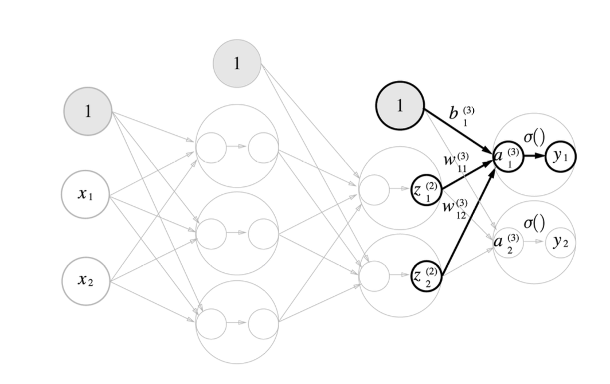
다시 그린 그림 · 누르면 원본가중합 부분은 앞과 똑같습니다: a(3) = z(2)W(3) + b(3) (보충, 교안에 식은 없음), 모양 (1×2)(2×2) = (1×2). 다른 점은 출력 노드 안의 함수가 h()가 아니라 σ()라는 것입니다. 출력층 함수는 풀려는 문제에 맞춰 고릅니다.
| 문제 | 출력층 함수 | 식 |
|---|---|---|
| 회귀regression | 항등 함수identity function | σ(x) = x — 받은 값을 그대로 냄 |
| 분류classification | 소프트맥스softmax | σ(xj) = exj∑i=1n exi |
여기의 σ는 "출력층 함수"라는 이름일 뿐 시그모이드가 아닙니다. 다른 책에서는 18쪽의 시그모이드를 σ로 쓰는 경우가 많아 헷갈리기 쉽습니다 (보충)(→ 27).
항등 함수로 y 구하기 (보충) 예시 값
| 0.1 | 0.3 |
| 0.2 | 0.4 |
b(3) = (0.1, 0.2)
입력은 z(2) = (0.6262, 0.7710)입니다. 책의 예처럼 출력층 함수는 항등 함수로 둡니다. 그러면 y = a(3)입니다.
| z1w + z2w | + b | a(3) = y | |
|---|---|---|---|
| 1 | 0.0626 + 0.1542 = 0.2168 | + 0.1 | 0.3168 |
| 2 | 0.1879 + 0.3084 = 0.4963 | + 0.2 | 0.6963 |
y = (0.3168, 0.6963)
출력층을 소프트맥스로 바꾸면 이 두 값이 확률 (0.4063, 0.5937)이 됩니다 (Python 검산). 두 경우 모두 y2가 더 크다는 순서는 같습니다.
소프트맥스 Softmax — 점수를 합이 1인 확률로
σ(xj) = exj∑i=1n exi
- 분자 exj: j번째 값의 지수. ex > 0이므로 x가 음수여도 양수가 됩니다.
- 분모: n개 값 모두의 지수를 더한 것. 모든 출력이 같은 분모로 나뉩니다.
- 그래서 각 출력은 0과 1 사이이고, 출력을 모두 더하면 1입니다 → 클래스별 확률로 읽습니다.
- ex는 증가 함수이므로 큰 값이 큰 확률이 되고, 순서는 바뀌지 않습니다.
21쪽 h는 원소마다 따로 계산합니다. 소프트맥스의 σ(xj)는 분모에 모든 원소가 들어가므로, 한 값이 바뀌면 나머지 출력도 모두 바뀝니다.
23쪽이 σ(x) = (σ(x1), …, σ(xn))처럼 원소별로 적었지만, 각 σ(xj) 안에 x 전체가 들어 있다는 점을 기억해야 합니다(→ 27).
24쪽 예를 손계산 — [1.3, 5.1, 2.2, 0.7, 1.1]
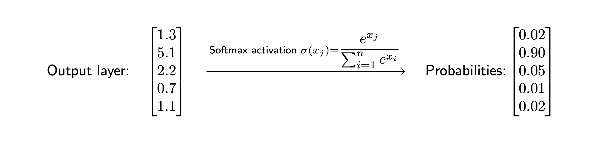
다시 그린 그림 · 누르면 원본- 값마다 ex를 구합니다(오른쪽 표 2열).
- 모두 더합니다: 합 = 181.734
- 각 ex를 합으로 나눕니다.
5.1이 다른 값보다 2.9 이상 커서 e5.1 ≈ 164가 합의 대부분을 차지합니다. 그래서 0.90이라는 큰 확률을 받습니다. 차이가 지수로 커진다는 것이 소프트맥스의 성질입니다.
| xj | exj | exj181.734 | 교안 (둘째 자리) |
|---|---|---|---|
| 1.3 | 3.669 | 0.0202 | 0.02 |
| 5.1 | 164.022 | 0.9025 | 0.90 |
| 2.2 | 9.025 | 0.0497 | 0.05 |
| 0.7 | 2.014 | 0.0111 | 0.01 |
| 1.1 | 3.004 | 0.0165 | 0.02 |
| 합 | 181.734 | 1.0000 | 1.00 |
Python 검산: 교안의 다섯 값과 모두 일치합니다.
작은 수로 연습하고, 성질 두 가지 (보충)
연습: x = (2.0, 1.0, 0.1)
| xj | exj | σ(xj) |
|---|---|---|
| 2.0 | 7.389 | 0.659 |
| 1.0 | 2.718 | 0.242 |
| 0.1 | 1.105 | 0.099 |
| 합 | 11.213 | 1.000 |
Python 검산. 값이 모두 같으면(예: (1, 1, 1)) 확률도 모두 같습니다(각 13).
ex가 증가 함수라서 가장 큰 x가 가장 큰 확률을 받습니다. 그래서 학습이 끝난 뒤 분류 결과(가장 큰 클래스)만 필요할 때는 소프트맥스를 생략하기도 합니다.
분자와 분모에 똑같이 e−C가 곱해져 약분됩니다. 24쪽 예에서 모든 값에서 5.1을 빼고 계산해도 (0.0202, 0.9025, …)로 같습니다. 컴퓨터에서는 ex가 너무 커지지 않게 최댓값을 빼고 계산합니다.
배치 처리 Batch Processing — 여러 샘플을 한 번에
If we process 100 images simultaneously, the output will have a shape of 100 × 2. This way of processing multiple data samples at once is called batch processing.
지금까지는 샘플 하나씩 출력을 계산했습니다. 100개(예: 이미지 100장)를 동시에 처리하면 출력의 모양은 100 × 2가 됩니다. 이렇게 여러 데이터 샘플을 한 번에 처리하는 방식을 배치 처리라고 합니다.
| 입력 | W(1) | → 은닉 1 | W(2) | → 은닉 2 | W(3) | → 출력 | |
|---|---|---|---|---|---|---|---|
| 샘플 1개 | x (1×2) | 2×3 | 1×3 | 3×2 | 1×2 | 2×2 | Y (1×2) |
| 샘플 100개 | X (100×2) | 2×3 | 100×3 | 3×2 | 100×2 | 2×2 | Y (100×2) |
모양 규칙: (a×b)(b×c) = (a×c). 각 곱셈에서 왼쪽의 열 수와 오른쪽의 행 수가 같아야 합니다(교안: dimensionally consistent). 가중치 모양은 그대로이고 맨 앞 차원만 1 → 100으로 바뀝니다. X의 i번째 행 = i번째 샘플, Y의 i번째 행 = 그 샘플의 출력입니다.
(보충) 편향 b(1)(1×3)은 100×3의 모든 행에 같이 더해집니다(numpy의 브로드캐스트). 교안은 x의 모양을 "(2)"로 적었는데, 행벡터로 보면 1×2입니다. 행렬 연산 한 번으로 많은 샘플을 처리하므로 반복문으로 하나씩 계산하는 것보다 빠릅니다.
순전파 전체를 한 표로 (보충) 예시 값 · Python 검산
| 단계 | 식 | 모양 | 값 |
|---|---|---|---|
| 입력 | x | 1×2 | (1.0, 0.5) |
| 은닉 1 가중합 | a(1) = xW(1) + b(1) | (1×2)(2×3) → 1×3 | (0.3, 0.7, 1.1) |
| 은닉 1 활성화 | z(1) = h(a(1)), h = 시그모이드 | 1×3 | (0.5744, 0.6682, 0.7503) |
| 은닉 2 가중합 | a(2) = z(1)W(2) + b(2) | (1×3)(3×2) → 1×2 | (0.5162, 1.2140) |
| 은닉 2 활성화 | z(2) = h(a(2)) | 1×2 | (0.6262, 0.7710) |
| 출력 가중합 | a(3) = z(2)W(3) + b(3) | (1×2)(2×2) → 1×2 | (0.3168, 0.6963) |
| 출력 | y = σ(a(3)), σ = 항등 함수 | 1×2 | (0.3168, 0.6963) |
W(1) = [[0.1, 0.3, 0.5], [0.2, 0.4, 0.6]], b(1) = (0.1, 0.2, 0.3) · W(2) = [[0.1, 0.4], [0.2, 0.5], [0.3, 0.6]], b(2) = (0.1, 0.2) · W(3) = [[0.1, 0.3], [0.2, 0.4]], b(3) = (0.1, 0.2) — 『밑바닥부터 시작하는 딥러닝』 3장의 값. 대괄호 안 한 묶음이 행렬의 한 행입니다. 값은 넷째 자리 반올림.
시험장에서 순전파를 푸는 순서 (보충)
- 모양부터 적습니다. x(1×2) · W(2×3) → 1×3. 다음 층 노드 수 = W의 열 수.
- 다음 층 노드 j마다 W의 j번째 열을 골라, 입력과 같은 위치끼리 곱해 더합니다.
- 편향 bj를 더해 aj를 얻습니다. 편향을 빠뜨리기 쉽습니다.
- 은닉층이면 h(시그모이드·계단·ReLU 중 문제에서 준 것)를 원소마다 적용해 z를 얻습니다.
- z를 다음 층의 입력으로 놓고 2–4를 반복합니다.
- 출력층은 σ: 회귀면 그대로(항등), 분류면 소프트맥스.
- W의 행을 골라 곱함 → 교안 방식(xW)에서는 열입니다.
- w12를 "1행 2열"로 읽음 → 교안 첨자로는 2행 1열(x2 → 1번 노드).
- 활성화 전 a를 다음 층에 넘김 → 넘기는 것은 z.
- 출력층에도 시그모이드 h를 씀 → 교안에서 출력층은 σ(항등·소프트맥스).
- 소프트맥스에서 분모를 자기 값만으로 계산 → 분모는 모든 값의 합.
거꾸로 풀기 — 빠진 가중치 찾기 (보충)
지난 학기 수강생 말로는 "3레이어 퍼셉트론 가중치 찾기"가 어려운 문제였다고 합니다(추측: 교수님 말씀 아님). 어떤 형태였는지 모르므로, 식 a = xW + b를 모르는 가중치에 대해 푸는 연습을 해 둡니다.
문제: x = (1.0, 0.5), b(1) = (0.1, 0.2, 0.3), w(1)11 = 0.1, w(1)21 = 0.3, w(1)31 = 0.5이고, 계산한 a(1) = (0.3, 0.7, 1.1)이다. w(1)12, w(1)22, w(1)32를 구하시오.
| aj = wj1x1 + wj2x2 + bj | 답 |
|---|---|
| 0.3 = 0.1 × 1.0 + w(1)12 × 0.5 + 0.1 | w(1)12 = 0.2 |
| 0.7 = 0.3 × 1.0 + w(1)22 × 0.5 + 0.2 | w(1)22 = 0.4 |
| 1.1 = 0.5 × 1.0 + w(1)32 × 0.5 + 0.3 | w(1)32 = 0.6 |
구한 값은 x2에서 나가는 가중치이므로 W(1)의 2행 (0.2, 0.4, 0.6)에 들어갑니다. 18의 W(1)과 같습니다.
"가중치 찾기"는 15쪽처럼 원하는 출력(XOR 등)이 나오게 가중치·편향을 정하는 문제일 수도 있습니다. 그 연습은 예상 문제 Q9(→ 28)에 넣었습니다.
전체 정리 ① — 뉴런에서 다층 퍼셉트론까지 (1–18쪽)
- AI ⊃ ML ⊃ DL. 기계학습은 사람이 고른 특징으로 학습하고, 딥러닝은 다층 신경망이 특징 추출과 분류를 함께 학습합니다(01–02).
- 생물학적 뉴런: 가지돌기(받음) → 세포체 → 축삭(보냄), 뉴런 사이 연결은 시냅스. 퍼셉트론은 뇌를 흉내 내려는 시도에서 나왔습니다(Rosenblatt, 1957 개발 · 1958 논문)(05–07).
- 퍼셉트론: 입력 여러 개 → 출력 하나(0 또는 1). w1x1 + w2x2 > θ이면 1, 아니면 0. θ를 −b로 바꾸면 b + w1x1 + w2x2 > 0이면 1(08, 11).
- 가중치 = 각 입력의 영향력(중요도), 편향 = 얼마나 쉽게 활성화되는가. 구조는 같고 매개변수만 바꿔 AND (0.5, 0.5, 0.7) · NAND (−0.5, −0.5, −0.7) · OR (0.5, 0.5, 0.2)(09, 11).
- 퍼셉트론 하나의 경계는 직선이라 XOR은 못 만듭니다. 층을 쌓아 XOR = AND(NAND, OR)로 해결 = 다층 퍼셉트론(12–13).
- 신경망: y = h(b + w1x1 + w2x2 + …). 가중합 a를 활성화 함수 h에 넣어 출력. h는 계단·시그모이드·tanh·ReLU 등(14–16).
전체 정리 ② — 3층 신경망의 순전파 (19–25쪽)
- 노드 2 → 3 → 2 → 2. 가중치 묶음 W(1), W(2), W(3)이 3개라서 3층. 가중치 16개, 편향 7개(17).
- w(l)ji = l층, 앞 아래 첨자 = 도착 노드, 뒤 = 출발 노드. x가 행벡터라 a = xW + b이고, wji는 W의 i행 j열에 들어갑니다(17–18).
- 한 층의 계산 = a = (앞 층 출력) · W + b → z = h(a) (원소마다 시그모이드). 다음 층으로 넘기는 것은 z(18–20).
- 출력층 함수 σ: 회귀는 항등 함수 σ(x) = x, 분류는 소프트맥스 σ(xj) = exj∑ exi — 출력이 0과 1 사이, 합 1(21–22).
- 소프트맥스 [1.3, 5.1, 2.2, 0.7, 1.1] → [0.02, 0.90, 0.05, 0.01, 0.02]. 큰 값의 순서는 그대로(22).
- 배치 처리: X(100×2)(2×3)(3×2)(2×2) → Y(100×2). (a×b)(b×c) = (a×c), 가중치 모양은 그대로(23).
- 예시 순전파: x = (1.0, 0.5) → a(1) = (0.3, 0.7, 1.1) → z(1) = (0.5744, 0.6682, 0.7503) → a(2) = (0.5162, 1.2140) → z(2) = (0.6262, 0.7710) → y = (0.3168, 0.6963)(24).
용어 정리 ① — 1–18쪽
| 인공지능AI | 감지·추론·행동·적응하는 프로그램 |
| 기계학습ML | 데이터를 더 많이 볼수록 성능이 좋아지는 알고리즘 |
| 딥러닝DL | 다층 신경망이 많은 데이터로 학습하는 기계학습의 부분 |
| 특징 추출feature extraction | 입력에서 분류에 쓸 특징을 뽑는 것. ML은 사람이, DL은 신경망이 |
| 가지돌기 · 축삭dendrite · axon | 다른 뉴런의 신호를 받는 부분 · 신호를 보내는 부분 |
| 시냅스synapse | 두 뉴런 사이의 연결 부위. 화학 물질(신경전달물질)로 전달 |
| 퍼셉트론perceptron | 입력의 가중합이 임계값을 넘으면 1, 아니면 0을 내는 모델 |
| 임계값 θthreshold | 출력이 1이 되려면 가중합이 넘어야 하는 값 |
| 가중치weight | 각 입력이 출력에 주는 영향(중요도)을 조절하는 값 |
| 편향bias | 뉴런이 얼마나 쉽게 활성화되는지 정하는 값. b = −θ |
| 논리 게이트 | AND·NAND·OR·XOR. 0 또는 1인 입력 두 개 → 0 또는 1 출력 |
| 선형 분리 | 직선(초평면) 하나로 두 클래스를 나눌 수 있음. XOR은 불가 |
| 다층 퍼셉트론MLP | 퍼셉트론을 층으로 쌓은 것. XOR을 표현 가능 |
| 은닉층hidden layer | 입력층과 출력층 사이의 층 |
| 활성화 함수activation function | 가중합을 출력으로 바꾸는 함수 h |
| 계단 함수step function | x > 0이면 1, x ≤ 0이면 0 (16쪽 h) |
용어 정리 ② — 18–25쪽
| 시그모이드sigmoid | 11 + e−z. 출력 0~1, z = 0에서 0.5 |
| tanh | ez − e−zez + e−z. 출력 −1~1, 원점을 지남 |
| ReLU | max(0, z). 음수는 0, 양수는 그대로 |
| 완전 연결fully connected | 이웃한 두 층의 모든 노드 쌍이 연결됨 |
| 가중합 a | (앞 층 출력 × 가중치)의 합 + 편향. 활성화 전 값 |
| 순전파forward propagation | 입력층에서 출력층 방향으로 출력을 계산하는 것 |
| 항등 함수identity function | σ(x) = x. 회귀 문제의 출력층 |
| 소프트맥스softmax | exj∑ exi. 분류의 출력층, 출력 합 1 |
| 회귀 · 분류 | 연속값을 예측 · 클래스를 예측 |
| 행벡터 | 가로 한 줄(1×n). 교안은 x를 행벡터로 둠 |
| 배치batch | 한 번에 처리하는 샘플 묶음. 배치 처리 = 묶음을 행렬 연산 한 번으로 |
| 원소별 적용 | 벡터의 각 원소에 함수를 따로 적용(h). 소프트맥스는 분모에 모든 원소가 들어감 |
확인 필요 ① — 질문할 것과 기호 주의
이 차시의 필기와 교수님 말씀(시험 범위, 계산을 어디까지 하는지)을 아직 받지 못했습니다.
"3레이어 퍼셉트론 가중치 찾기"는 지난 학기 수강생 말이며 교수님 말씀이 아닙니다. 순전파 계산인지, 빠진 가중치를 거꾸로 구하는 것인지, 게이트처럼 가중치를 설계하는 것인지 확인이 필요합니다.
시험에서 시그모이드·ex 값을 주는지 확인이 필요합니다.
- 20쪽 x를 행벡터로 두고 a = xW + b. 그래서 W(1)은 2×3이고, wji(도착 j, 출발 i)가 i행 j열에 들어감 = 첨자 기준으로 전치된 모양(18)
- 20쪽 식은 소문자 굵은 x, 정의는 대문자 X = (x1, x2). 같은 것. 25쪽에서는 X가 배치(100×2)
- 21쪽 h(x)의 x는 입력 x가 아니라 "아무 벡터"라는 뜻. 실제로는 a(1)을 넣음. 시그모이드는 예로 든 것
- 활성화 함수 기호가 쪽마다 다름: 16–17쪽 h(16쪽은 계단 함수), 18쪽 g(z), 21쪽 h(시그모이드), 23쪽 출력층은 σ — 이 σ는 시그모이드가 아님(항등 또는 소프트맥스)
- 23쪽 소프트맥스를 σ(x) = (σ(x1), …)로 적었지만 각 σ(xj)의 분모에 x 전체가 들어감 — h처럼 원소마다 독립이 아님
- 19쪽 "3-layer"는 가중치가 있는 층 수(13·17과 같은 기준). 노드 열로 세면 4층
- 12쪽 그림에는 경계 직선이 없음. 본문(10)에 보충으로 AND x1 + x2 = 1.4, OR x1 + x2 = 0.4 직선을 넣음(0.5x1 + 0.5x2 = θ)
확인 필요 ② — 표기 오기 (바로잡아 썼습니다)
| 교안 | 원문 | 바로잡은 것 · 근거 |
|---|---|---|
| 4쪽 | 1958 Perception (Rosenblatt), 1986 Multilayer Perception | Perceptron. 8쪽 제목과 9쪽 논문 제목 "THE PERCEPTRON" |
| 4쪽 | McCulloch & Pitt, Neocogition, KOhonen, Boltzman, pretraing | McCulloch & Pitts, Neocognitron, Kohonen, Boltzmann, pretraining |
| 4쪽 | 2012 AlexNet — Hinton | AlexNet 논문의 제1저자는 Krizhevsky(공저 Sutskever, Hinton). 연표는 지도교수 이름만 적음 |
| 5쪽 | DeepSeek 줄: V2 → LLM V1 → Coder V1 → Coder V2 → V2.5 → R1 → V3 → R2 | 실제 공개 순서는 LLM V1(2023.11) → V2(2024.5) → V3(2024.12) → R1(2025.1). 그림의 V2 위치(2023년 초)와 R1·V3 순서가 다르게 보임. R2 표시도 확인 필요 |
| 8쪽 · 4쪽 | Developed … in 1957 / 연표 1958 | 둘 다 맞음: 1957년 보고서로 개발, 1958년 Psychological Review 논문(9쪽 그림) |
| 9쪽 | ”If … three fundamental question.” | 원 논문은 "three fundamental questions:" (복수형). 여는 따옴표가 닫는 모양(”) |
| 6쪽 | Synapses (1014), 뉴런당 약 104개 연결 | 1011 × 104 = 1015라 1014와 자릿수가 하나 다름. 대략의 크기(1014~1015)로 읽으면 됨 |
| 12 · 14쪽 | 12쪽 ■/●, 14쪽 △/○ | 같은 뜻(출력 1/출력 0)을 그림마다 다른 기호로 표시 |
예상 문제 안내
O/X(Q1), 계산(Q2, Q3, Q7, Q8, Q10, Q11), 기호 읽기(Q6), 가중치 설계(Q9), 서술(Q4, Q5, Q12)을 섞었습니다. 중간고사 때 "식 계산보다 개념, 식은 뜻 위주"라고 하셨으므로 계산 문제에도 각 값의 뜻을 묻는 부분을 넣었습니다.
지난 학기 수강생 말(추측)에 맞춰 3층 신경망 순전파(Q7)·빠진 가중치 찾기(Q8)·XOR 가중치 정하기(Q9)를 넣었습니다.
이 차시의 교수님 말씀을 받지 못해 문제는 교안만 보고 만든 예상이며 실제 출제와 다를 수 있습니다. 정답 칸을 눌러야 답이 보입니다. 모든 수치는 Python으로 검산했습니다.
(1) 딥러닝은 기계학습에 포함된다.
(2) 전통적인 기계학습에서는 특징 추출과 분류를 하나의 신경망이 함께 학습한다.
(3) 퍼셉트론에서 편향 b는 뉴런이 얼마나 쉽게 활성화되는지를 정한다.
(4) 단층 퍼셉트론으로 XOR 게이트를 만들 수 있다.
(5) 소프트맥스 출력의 합은 항상 1이다.
교안에 자주 나오는 단어
| mimic v. | 흉내 내다 — attempts to mimic the human brain |
| dendrite · axon n. | 가지돌기 · 축삭 — receiver · transmitter |
| hereditary adj. | 유전의 — hereditary traits 유전 형질 |
| impulse n. | (신경) 신호, 자극 — receives signals (impulses) |
| parallelism n. | 병렬성 — massive parallelism 대규모 병렬성 |
| fault tolerance n. | 결함 허용 — 일부가 고장 나도 동작 |
| threshold n. | 임계값 — exceeds the threshold θ 임계값을 넘다 |
| bias n. | 편향 — replace θ with −b |
| gate n. | (논리) 게이트 — implement logic gates |
| constraint n. | 제약 — the constraint of linearity 선형이라는 제약 |
| linearity n. | 선형성 — If the constraint of linearity is removed, … 제약을 없애면 |
| activation n. | 활성화 — triggers activation 활성화를 일으키다 |
| hidden layer n. | 은닉층 — the first hidden layer has 3 nodes |
| node n. | 노드 — consists of 2 nodes |
| transmit v. | 전달하다 — how are signals transmitted |
| identity function | 항등 함수 — for regression |
| regression n. | 회귀 — 연속값 예측 |
| classification n. | 분류 — 클래스 예측 |
| dimensionally consistent | 차원(모양)이 맞는 — matrix dimensions match |
| simultaneously adv. | 동시에 — process 100 images simultaneously |
| batch n. | 묶음 — batch processing 배치 처리 |
| estimate v. | 추정하다, 구하다 — estimated the output |
필기 원문
아직 필기를 받지 못했습니다. 보내 주시면 교수님 말씀과 함께 반영합니다.
그때까지 이 자료의 중요도 구분과 예상 문제는 교안과 지난 학기 수강생 말(추측)만 보고 정한 것입니다.